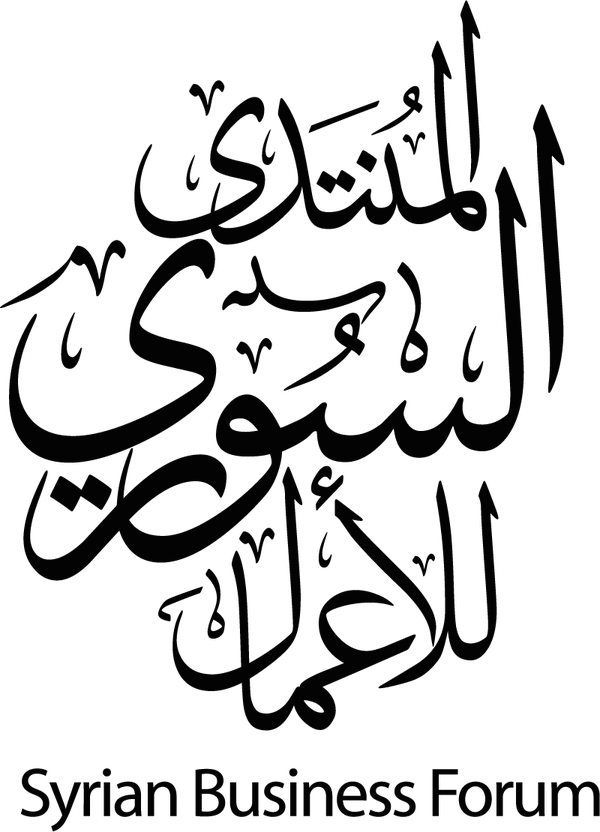
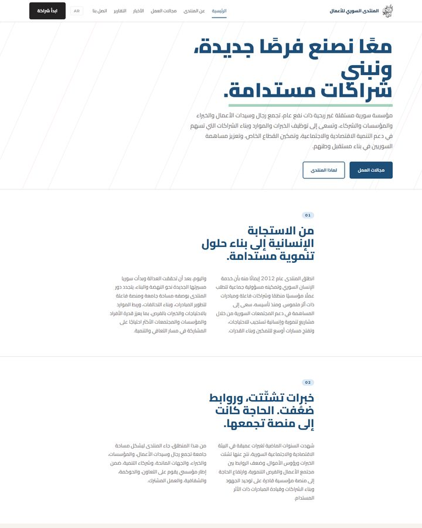
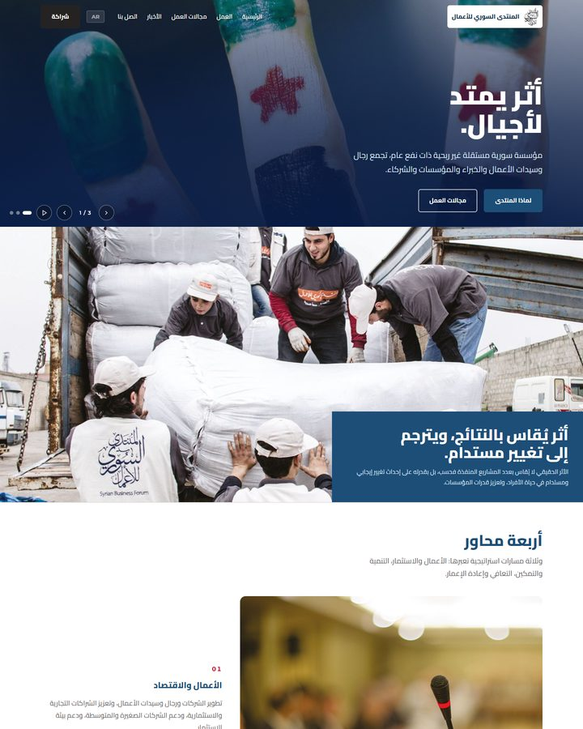
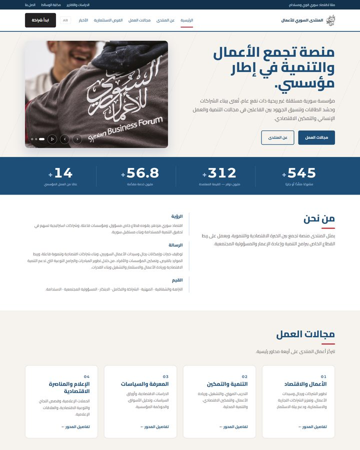
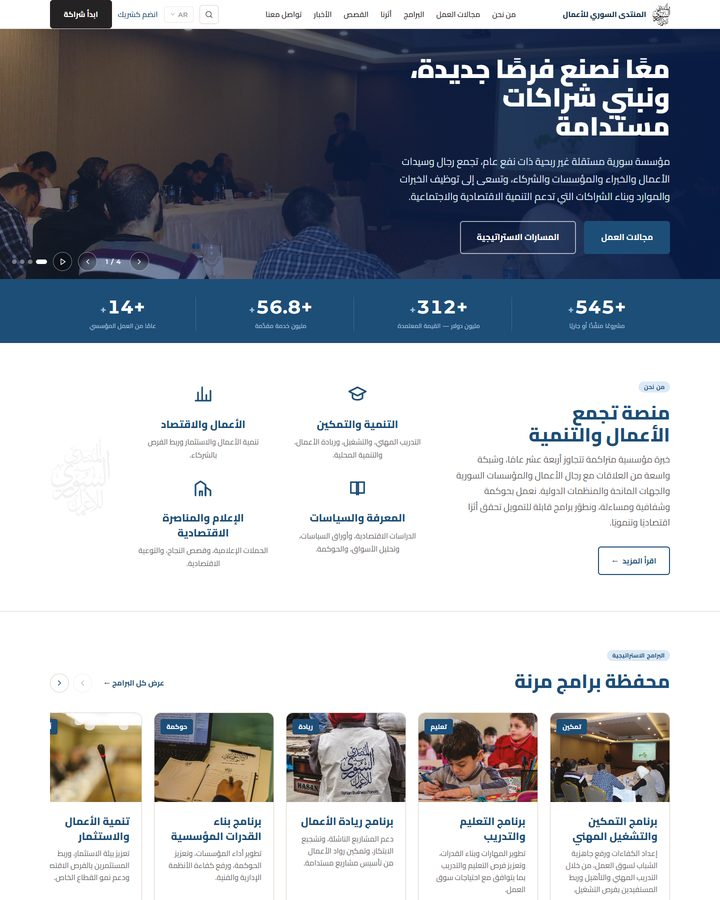

المنتدى السوري للأعمال — الاتجاهات البصرية للموقع

A · EDITORIAL
تحريري
المضمون أولًا. عناوين كبيرة ومساحات بيضاء واسعة، ومجالات العمل مصفوفة في مداميك أفقية بدل شبكة بطاقات. صورة واحدة تقريبًا: الشعار.
افتح الاتجاه أ

B · VISUEL
بصري
الصورة تقود. بطل يملأ الشاشة، ومجالات عمل بتخطيط مجلّة يتناوب فيه الجانبان، ونص قصير في كل قسم. الأقوى أثرًا والأثقل تحميلًا.
افتح الاتجاه ب

C · INSTITUTIONNEL
مؤسسي
الأقرب إلى المواقع المؤسسية المعروفة: شريط علوي، بندة إحصائيات، شبكة بطاقات لمجالات العمل والمسارات. مألوف للمؤسسات والشركاء، أقل تميزًا بصريًا.
افتح الاتجاه ج

D · SHOWCASE
مؤسسي متكامل تفاعلي
صفحة رئيسية كاملة: بطل بشبكة، شريط مؤشرات، أربع ركائز، رفوف برامج وقصص، خريطة شراكات، أخبار وتذييل موسّع. الوحيد الذي يحمل جافاسكربت.
افتح الاتجاه د